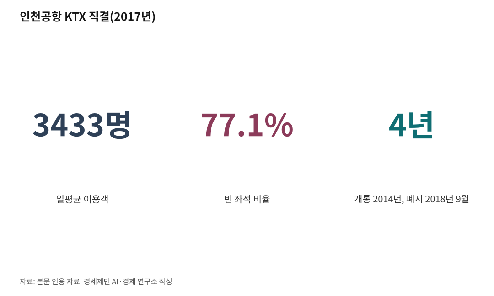

[세계3위 인천공항미래⑧] 강한 관문은 지방까지 닿아야 두꺼워진다, 연결망이 답이다
환승객 804만명이 인천에 내려도 한국 안 지방으로 흐를 통로가 막혀 있다
항공은 지방공항 직결로, 철도는 고속철도 직결로, 두 축을 함께 연다
인하대 해양AI융합센터 김갑봉 연구교수
앞선 글에서 강한 관문이 환승의 토대라 했다. 그 관문은 지방까지 닿아야 두꺼워진다. 환승객 804만명이 인천에 내려도 한국 안으로 흐를 통로가 좁으면 관문은 거기서 멈춘다. 연결망이 그 통로다. 축은 둘, 항공과 고속철도다.

1. 인천은 지방과 끊겨 있다
인천공항에서 한국 안으로 흐르는 통로는 좁다. 올해 5월 인천~제주가 다시 열리기 전까지 정기 국내선은 환승 전용 내항기 둘뿐이었다. 인천~김해와 인천~대구다. 운항사도 대한항공(KE) 한 곳이었다.
인천~김해 환승 내항기는 2025년 약 45만명, 일평균 1214명이 탔다. 환승객 804만명 가운데 하루 1214명만 곧바로 지방으로 빠진다. 나머지는 김포국제공항(GMP)까지 약 50분을 더 가서 다시 국내선을 탄다. 이 동선이 25년째 그대로다.
철도도 끊겼다. 인천공항 KTX 직결은 2014년 열렸다가 2018년 9월 닫혔다. 2017년 일평균 이용객 3433명에 빈 좌석이 77.1%였다. 공항철도(AREX)와 한 선로를 써서 KTX 속도가 300km/h에서 170km/h로 떨어지는 구조 문제도 컸다. 사업비 3000억원을 들이고 4년 만에 접었다.

2. 선진 허브는 같은 편명으로 철도까지 잇는다
프랑크푸르트공항(FRA)을 보자. 루프트한자(LH)는 독일 철도공사와 손잡고 고속열차 ICE에 항공편명을 붙인다. 매일 240편이 넘는 ICE가 28개 도시를 공항 안 장거리역과 직결한다. 항공으로 직접 잇는 도시의 두 배가 넘는다. 2024년 한 해 약 50만명이 이 항공·철도 통합 서비스를 이용했다. 공항에 붙은 별도 장거리 고속철도역을 둔 덕이다.
암스테르담 스키폴공항(AMS)은 자회사 KLM 시티호퍼로 유럽 80개 도시를 잇는다. 일평균 375편, 연 1100만명을 나르는 피더(feeder, 공급선)다. 공항 바로 아래 철도역에서 고속열차가 파리와 브뤼셀까지 닿는다. 항공으로 닿을 곳은 항공으로, 철도로 닿을 곳은 같은 편명을 단 철도로 잇는다.
3. 항공 축, 막힌 통로가 열리기 시작했다
변화가 시작됐다. 정부는 인천공항 입국객의 지방 이동 편의를 높이려고 국내선 증편을 추진하기로 했다. 제11차 국가관광전략회의(2026.2.25)에서다.
첫 결과가 인천~제주다. 2016년 끊긴 노선이 9년여 만인 2026년 5월 주 2회로 다시 떴다. 인천~김해 환승 내항기는 4월부터 주 35회에서 39회로 늘었다. 정부는 3분기에 인천~부산도 복항하겠다고 했다.
다음 단계는 호남과 남해안 거점이다. 무안국제공항(MWX)은 2024년 말 항공기 사고로 폐쇄가 길어졌다. 안전 보강이 끝나고 2027년 말 광주공항 국내선을 통합하면 서남권 거점이 된다. 정부는 명칭을 김대중국제공항으로 바꾸는 방안도 검토한다. 그 시점에 인천~무안 직결을 본격 논의할 수 있다. 사천공항과 여수공항도 단계적으로 잇는다. 사천은 우주항공청 개청과 국제공항 승격 흐름을 탔고, 여수는 남해안 관광 거점이다.
4. 철도 축, 인천만 고속철도와 단절이다
철도는 더디다. 인천발 KTX가 2026년 12월 열리지만 출발지는 송도역이지 인천공항이 아니다. 호남고속철도 2단계가 2027년 열리면 무안공항역이 생긴다. 인천공항이 KTX 직결을 잃은 그 시기에 호남 거점공항은 고속철도 직결을 얻는다. 인천공항만 고속철도와 끊긴 채 남는다.
길이 없지는 않다. 프랑크푸르트는 같은 선로 공유 문제를 공항 옆에 전용 장거리 고속철도역을 놓아 풀었다. 인천공항도 공항철도와 분리한 전용 직결을 설계하면 빈 좌석 문제를 줄이고 지방 직결을 살릴 수 있다.
5. 사장이 국토부와 함께 풀 일
연결망은 공사 혼자 풀지 못한다. 국토교통부 협력과 시한 관리가 필요한 핵심 과제다. 사장이 할 일은 셋이다.
첫째, 환승 전용 내항기를 시범에서 정기편으로 키우고 인천~제주와 부산을 안착시킨다. 둘째, 무안국제공항과 사천·여수를 안전 보강 시점에 맞춰 단계로 잇는 직결 로드맵을 짠다. 셋째, 인천공항 고속철도 직결을 전용역 방식으로 다시 설계하자고 정부에 또렷이 제안한다.
관문이 두꺼워야 환승도 화물도 두꺼워진다. 연결망은 그 관문을 지방까지 넓히는 일이다. 항공과 고속철도 두 축을 함께 열 때, 인천에 내린 804만명이 한국 어디로든 흐른다.
다음 글에서 규모와 효율, 5단계 확장과 가동률을 짚는다.
이 글은 인천공항의 미래를 다루는 연재의 여덟 번째 글이다.
참고문헌
인천국제공항공사, "2025년 역대 최다 항공운송실적"(환승객 804만6572명), 2026.1.25.
국토교통부, "2026년 하계 정기 항공편 운항 일정"(인천~김해 환승 내항기 주 35회→39회 증편, 인천~부산 3분기 복항 계획), 2026.3.19.
국토교통부, "제주항공 인천~제주 국내선 운항 허가"(주 2회, 9년여 만 재개), 2026.3.24.
대통령실·관계부처, "제11차 국가관광전략회의"(인천공항 입국객 지방 이동 편의 국내선 증편 추진), 2026.2.25. (아시아경제 보도, https://www.asiae.co.kr/article/2026022514450960845)
Lufthansa Group, "By Train and by Plane: Lufthansa and Deutsche Bahn announce record figures"(ICE 28개 도시, 일 240편 이상, 2024년 50만 예약, 항공 직결 도시의 두 배 이상), 2024.11.25., https://newsroom.lufthansagroup.com/en/by-train-and-by-plane-lufthansa-and-deutsche-bahn-announce-record-figures1/
European Regions Airline Association(ERA), "KLM Cityhopper"(유럽 정기 취항 80개 도시, 일평균 375편, 연 1100만명), https://www.eraa.org/klm-cityhopper
뉴시스, "3000억 투자한 '인천공항 KTX', 4년 만에 폐지"(2017년 일평균 3433명, 빈 좌석 77.1%, 2018.9.1. 노선 폐지), 2018.7.30., https://www.newsis.com/view/NISX20180730_0000378089
인천투데이, "[특집 5차 철도망⑦] 인천공항 개항 24년, KTX는 왜 단절돼 있나"(공항철도 선로 공용 300km/h→170km/h), 2025.7.30., https://www.incheontoday.com/news/articleView.html?idxno=306115
경향신문, "인천발 KTX 2026년 12월 개통"(송도역 출발), 2025.7.29., https://www.khan.co.kr/article/202507291111001
서울신문, "광주 군·민간공항 무안 통합 이전 합의…'김대중 공항'으로 새출발"(6자 협의체 합의 2025.12.17., 호남고속철 2단계 개통 시기 광주공항 국내선 이전, 김대중국제공항 명칭 변경 검토), 2025.12.18., https://www.seoul.co.kr/news/society/2025/12/18/20251218500051
김갑봉(경세제민 AI·경제 연구소), "[항공기사·상편] 인천공항 25년, 동북아 허브 채우려면 지방공항 직결이 답"(인천~김해 환승 내항기 2025년 약 45만명·일평균 1214명), 2026.3.
김갑봉(경세제민 AI·경제 연구소), "[항공기사·하편] 인천공항 25년, 동북아 허브 채우려면 지방공항 직결이 답"(인천~부산 3분기 복항 계획), 2026.3.